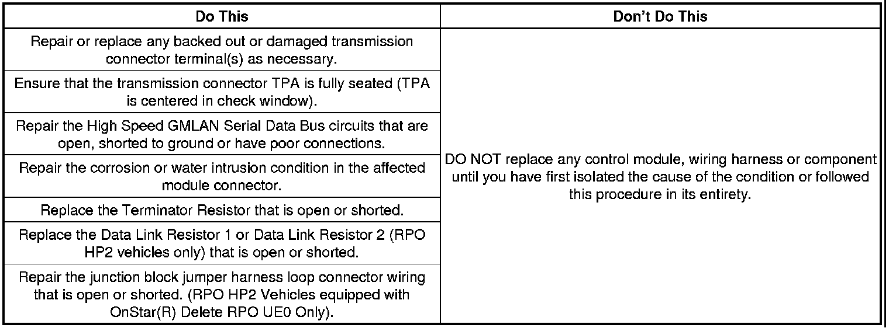

Part 1
Correction
Information for the Procedures to Diagnose and Repair the Above Conditions
1. Perform the Diagnostic System Check-Vehicle to begin your diagnosis.
2. Perform a thorough visual inspection of the vehicle.
3. Depending on the vehicle and vehicle build, some of the procedures may not be applicable.
4. The following procedure is the only one applicable to the Corvette and XLR.
Chafed Wiring Harness at Transmission Case Retaining Clip and Inspection of the 16-way Electrical Connector for Backed Out Terminals
1. Turn OFF the ignition and all accessories.
2. Raise and support the vehicle. Refer to Lifting and Jacking the Vehicle in SI.
3. Locate the 16-way electrical connector on the right side of the automatic transmission as shown.
4. Inspect for chafed, damaged, pinched, open or shorted wiring within the conduit of the harness where it is secured at the transmission by a metal attachment clip as shown. Inspect any wiring harness where these metal attachment clips are used on the vehicle as needed.
• If the wiring is damaged, repair as needed. Refer to Power and Signal Distribution > Wiring Systems and Power Management > Diagnostic Information and Procedures in SI. Protect the conduit by covering any sharp edge with butyl tape and the conduit and wiring harness with woven polyester (PET) electrical tape. Secure the harness as needed.
5. Before disconnecting the 16-way connector, inspect for any backed out terminals (2) as shown. Fully seated terminals (1) are shown for comparison.
1. If a backed out terminal (2) is found, identify the terminal(s) on the repair order.
2. Look at the connector in order to identify the number of the cavity with the backed out terminal. Refer to Wiring Systems and Power Management > Component Locator > Master Electrical Component List in SI.
Note
For 2ML70 Only: Disconnect the 4WAL electrical connector.
6. Use the following procedure to disconnect the 16-way electrical connector:
1. Release and hold the slide lock on the wiring harness connector.
2. Rotate the connector lever and remove the connector from the component.
7. Repair or replace the terminal(s) as necessary using the following procedure:
1. Locate the terminal position assurance (TPA) as shown.
Note
The TPA cannot be removed from the connector while there are terminals present in the connector body.
2. Use a small flat blade tool to push the TPA until it bottoms out.
3. See the release tool cross reference in the Reference Guide of the J-38125 to ensure that the correct release tool is used. Use the J-38125-28 tool to release the terminals by inserting the tool into the terminal cavity as shown.
4. While holding the removal tool in place, gently pull the wire out of the back of the connector.
Note
If the female terminal(s) must be replaced, it is part number 22124472200. It is located in Yazaki tray number 12 in the J-38125 Terminal Repair Kit.
5. Repair or replace the terminal(s) as needed. Refer to the instructions in the J-38125 manual.
8. If the wiring is damaged, repair as needed. Refer to Power and Signal Distribution > Wiring Systems and Power Management > Diagnostic Information and Procedures in SI.
9. Slide the new terminal(s) into the correct cavity at the back of the connector until it locks in place. The new terminal(s) should be even with the other terminal(s).
10. Ensure that each terminal is locked in place by gently pulling on the wire.
Note
The male terminal(s) cannot be repaired as they are an integral part of the transmission control module (TCM).
11. Inspect for bent or misaligned terminal(s) in the transmission half of the electrical connector.
• If they are bent, use a suitable tool and apply gentle pressure to straighten them. Indicate on the repair order the terminal number that was bent.
• If they are damaged, replace the TCM. Refer to Control Solenoid Valve and Transmission Control Module Assembly Replacement in SI.
12. Prior to installing the transmission connector, perform the following steps to ensure that the TPA lock is fully seated.
Locate the TPA lock in the reassembled transmission connector. Refer to the arrow in the illustration above, which points to a TPA lock. This one is in an unseated position. Using a small flat blade tool, push to seat the TPA until it bottoms out. Verify the TPA is fully seated.

- If the TPA is off-center in the check window as shown, then it is only partially seated. Note the large gap at the arrow. Reseat the TPA lock and ensure that it is fully seated.
- If the TPA lock is centered in the window as shown, then it is fully seated. The gaps shown by the arrows should be even on both sides.
Note
For 2ML70 Only: Connect the 4WAL electrical connector.
13. Connect the 16-way electrical connector to the transmission.
14. Lower the vehicle.
15. Clear any DTCs that may be present with a scan tool and verify the proper operation of the vehicle.